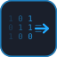

Mindware Lab - Trident G IQ
Zone Coach
3 minute valid Cognitive Control Capacity (CCC) check for assessing your brain state with recommended next steps.
Probe length
3 minutes
Output
State + training gate
Next step
In-app recommendation
First note how your cognitive state feels right now....
Keyboard and touch supported. Do not switch tabs during the run.
Running probe
Trials: 0
S:0 P:0 C:0
Brain State Result

Bits / second (CCC)
-
Cognitive State
-
Confidence Level
-
Probe trials / Catch fail
-
Timeout rate / RT CV
-
PES / Burstiness
-
-
-
Training gate
History (local): 0 valid checks saved.-
Last: -